Introduction
Soldat is a unique side-view multiplayer action game. It takes the best from games like Liero, Worms, Quake and Counter-Strike and gives you fast action gameplay with tons of blood and flesh. Soldiers fight against each other on 2D battle arenas using a deadly military arsenal.
Requirements
Minimum requirements:
- A PC, a keyboard, a mouse, a brain
- 333mhz processor
- Video accelerator that can run Direct3D
- Graphics card compatible with DirectX 8.1
- 32 MB RAM
- Some free MB on disk
- Sound card
- Network card or modem
- Microsoft Windows 98/Me/2000/XP/Vista/7/8
- Microsoft DirectX 8.1
The Story
It's Quake style:
A couple of guys decided to kill each other and you can be one of them.
Getting Started
Singleplayer.
The easiest way to start a game:
- Select a map from the MAPS listbox on the right
- Select some bots from the BOTS checklistbox on the far right or some random bots from the RANDOM BOTS field
- Click the START GAME button
Multiplayer.
If you want to play with other people, you have to decide how first:
-
You start a game and others join you
Click on the OPTIONS menu. In the NETWORK options select connection type (Connection - LAN/Internet). Set the online players limit (Max Players - should be small if you have a slow internet connection). The game can be registered in the lobby server in internet games (REGISTER IN LOBBY SERVERS), so other players can find your game in the JOIN GAME servers search. Now select a game mode, some maps from the list and press START GAME in the first menu. If your game has been successfully registered in the lobby server you will get a message in the game.
-
You join a game
Click on the JOIN GAME menu. If you know the IP address of the server you want to join then type it in the REMOTE HOST IP field. If you want to search for active servers in the internet or LAN, click REQUEST SERVERS. Double click or select a game from the list with the lowest PING time and with players on, then press JOIN GAME.
Default Controls
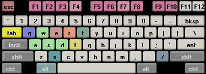
- [A] - run left
- [D] - run right
- [W] - jump
- [S] - crouch
- [Left Mouse Button] - fire
- [Right Mouse Button] - fly
- [E] - hold down or release after a while to throw grenade
- [F] - throwaway current weapon
- [X] - go prone position
- [Q] - change weapon to secondary
- [R] - reload weapon
- [T] - chat
- [Tab] - activate/deactivate weapons menu while waiting for respawn
The above keys can be changed in the PLAYER options.
Tricks:
- Flag throwing - Hold jump key + crouch key (default W+S)
- Backflip - Jump backwards and press the fly button
- [/] - enter command
- [F1] - players list with scores / [ALT + F1] - hide player names
- [F2] - weapon statistics / [ALT + F2] - show/hide sniper line
- [F3] - minimap on/off / [ALT + F3] - statistics (FPS, ping, network bandwith)
- [F4] - take screenshot (saves it to Soldat\Screens)
- [F5] - stops/plays music
- [F6] - previous music track
- [F7] - next music track
- [F8] - record/stop demo / fast forward while playing demo
- [F9] - minimize the game
- [F10] - pause game
- [ALT] - + a,b,c... or 1,2,3...0 keys - chat taunts or commands
- [ESC] - stops the game and shows the game menu
Game Modes
-

Deathmatch
Everybody fights against each other. The one who kills the most wins.
Recommended Respawn Time: 3-6 seconds.
-
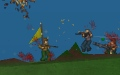
Pointmatch
The same as Deathmatch but here you fight for points. There is a yellow flag on the map, when you carry it you double your points for kill. You can also get points for multikills. For killing 2 guys in a row you get double points, when you kill 3 you get 4 times more points. If you carry the flag and kill 6 guys in a row you can get 64 points!
Recommended Respawn Time: 3-6 seconds.
-
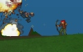
Rambomatch
Rambo - First Blood style. On the map there's John Rambo's Bow. The one who takes it gains super powers and can regenerate health. The rest of the players hunt him for the bow because only Rambo gets points for kill.
Recommended Respawn Time: 6-10 seconds.
-
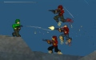
Teammatch
There can be 4 teams on the map (Alpha Team, Bravo Team, Charlie Team, Delta Team) that fight against each other. The team that gets the highest score (sum of all kills) wins.
-
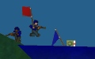
Capture the Flag
A competition for two teams (Alpha Team & Bravo Team). To score you have to steal the opponents team flag and bring to your base with your flag.
-
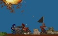
Infiltration
There are two teams (Alpha Team and Beta Team). The blue team has a base with a black flag, that they must defend. The goal of the red team is to steal the black flag and bring it to the white flag (usually near the reds spawn place).
Recommended Realistic Mode.
-
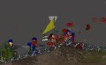
Hold the flag
Two teams (Alpha Team and Beta Team) fight over the yellow flag. The team that holds the flag gets points every couple of seconds.
Game Options
Standard options available in the OPTIONS menu:
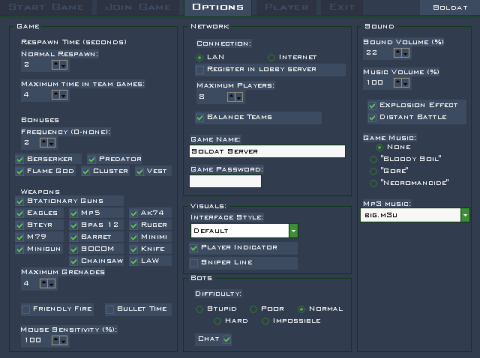
-
GAME
-
Respawn Time:
-
Normal Respawn:
Time, in seconds, that you remain dead until your next respawn. Used in Deathmatch, Pointmatch and Rambomatch.
-
Maximum Time in Team Games:
In team games (Teammatch, Capture the Flag, Infiltration) the respawn system is called Wave Respawn. During the game there is set a global respawn timer for all players. It's cycle depends on the number of players in the game. When it goes to zero everybody that have been killed before - respawn and the timer starts again. For example: When there is 20 players (10 in each team) the timer will reach zero every 40 seconds. Every 40 seconds everone that died in that time will respawn. Maximum Time in Team Games is used so that this time isn't too long, it shortens it to the value you set.
-
Bonuses:
Option to turn off bonuses.
-
Frequency:
Frequency of special bonuses appearing. 0 - never... 5 - lots.
-
Weapons:
Option to turn off weapons.
-
Maximum Grenades:
The maximum amount of grenades you can carry. It is also the number of grenades you pick-up in the boxes. On respawn you get half of this amount.
-
Friendly Fire:
If checked you can kill your teammates. Not recommended in internet games.
-
Bullet Time:
When all players are nearby (on one screen) and someone is killed the game goes into bullet time mode which is a cinematic slow motion effect.
-
Mouse Sensitivity:
The sensitivity of mouse cursor movement.
-
NETWORK
-
Connection:
The type of network game you want to play (LAN/Internet).
-
Maximum Players:
Maximum number of players that can join your server.
-
Register in Lobby Servers:
When you start a server it can register in lobby servers so people can find it in the JOIN GAME servers browser.
-
Game Name:
The name of your game server. It will be shown in the servers search.
-
Game Password:
Your game servers password. Only players that know it can join.
-
Balance Teams:
Players that join server will be forced to join the team with less players. Works in CTF and Infiltration.
-
VISUALS
-
Interface Style:
You can change the style of the game interface. Interface Style changes the graphics, cursor, position of statistics and more.
-
Player Indicator:
If it's on you will see a little arrow above your player, so you know which one is yours.
-
Sniper Line:
Draws a line between the player and the cursor which helps aiming on far distances.
-
BOTS
-
Difficulty:
Affects bots accuracy and behaviour.
-
Chat:
If on the bots talk from time to time.
-
SOUND
-
Sound Volume:
The sound volume in percents. Also affects the music player volume.
-
Music Volume:
The volume of the Game Music in percents.
-
Explosion Effect:
The effect that happens when something explodes near your player (you become deaf for a few seconds and hear a whistle sound).
-
Distant Battle:
Turns on/off distant battle sounds.
-
Game Music:
Original game music that can be played during the game.
In the Start Game options:
-
Kill Limit, Point Limit:
When a players Kills or Points reach this number the round ends. In Teammatch the team score must reach it.
-
Capture Limit:
Flag captures limit in Capture the Flag mode.
-
Time Limit:
Amount of time that the round is played in minutes.
-
Survival Mode:
There is no respawning in this mode. After a player is killed he has to wait until there is one man standing or one alive team and then the round ends and everybody respawns again.
-
Realistic Mode:
This mode is for advanced players.
- Players have low health.
- Falling damage.
- You see only what your player sees. If someone is behind a wall you won't see him.
- Weapons have recoil. After a shot your cursor goes up (to prevent this you should fire single shots or short bursts).
- No special bonuses.
-
Loop:
Loops the map list. If not checked the game ends after the maps are finished.
-
Random Bots:
The number of random bots that will play the game. In team games this option is next to the team name.
In the Soldat Setup options:
-
Graphics
-
Fullscreen:
If on the game runs in fullscreen mode. Some problems can be solved in window-mode.
-
Dithering:
Useful in 16-bit color mode. It smooths the colors so they look like 32-bit.
-
Antialiasing:
It smooths the whole game. Available only on video cards that support it (like GeForce).
-
Bitrate:
Color mode. 32-bit is better, but not all cards are compatible with it (like Voodoo).
-
Refresh Rate:
The rate of monitors refresh.
-
Video Adapters:
Available video adapters.
-
Sound
-
Sound Quality:
Sound output quality.
-
Sound Output Type:
Available sound devices.
-
Sound Driver List:
Availale sound drivers.
-
Performance
-
Particles on screen:
Amount of extra elements like: blood, smoke, gun shells, dust.
-
Bot Seeing Quality:
The quality of the bots eye. Affects the games performance.
-
Render Bullet Trails:
Renders long bullet trails.
-
Render Weather Effects:
Renders snow, sand or rain.
-
Render Smooth Polygons:
Renders nice smooth polygon edges.
-
Show Death Console:
Show the kills console in the upper-right corner.
-
File logging:
Turns on/off file logging (console logs and kill logs).
-
Auto record:
The game automaticly records the last minute (configurable in soldat.ini) of the gameplay (in demos/autodemo.sdm). The recording can be saved at any time by pressing F8 (saved in another file demos/autodemoX.sdm). Press F8 twice while autorecording and you can record a normal demo.
-
Network
-
Game port:
the server's port that players will join.
-
Internet connection speed:
The speed of your internet connection.
-
Max Ping:
The maximum ping time that players can have on your server.
-
Servers greetings message:
The message that is displayed for people that join your server.
-
Never forward clients:
If you have a firewall with open ports check this, so that clients don't have to override the firewall through the lobby server.
-
Register server with All-Seeing Eye:
The server registers in All-Seeing Eye.
-
Server Link:
A link that will be displayed on the lobby servers web page. It can be the servers www page or admins e-mail.
-
More
-
Video Compatibility:
Use only in emergency.
-
Force Software:
Runs the game without hardware video acceleration.
-
Blank Screen while bonus fix (old ATI cards):
Fixes the problem with the blank screen if you take Berserker for example.
-
Texture Filters:
Change if you're bored.
-
Backbuffer Count:
Change if you're really bored.
-
Languages - Change:
Allow to change the language of the text in Soldat (language files are placed in the Soldat\Txt\Languages folder).
Non-standard options are available in the SOLDAT.INI file.
Game Screen
The Soldat HUD:
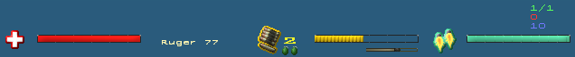
The Bars in the bottom of the screen are:
- Red: Health
- Yellow: Ammuniton or Reload Time
- Little Gold: Fire Interval Time
- Blue: Jet Fuel
Player Status [on/off F2] is usually placed above the jet fuel bar:
- First green number, from the top: your place in the game / number of players.
- Middle red: your kills/points and points to leader.
- Purple: Kill Limit/Point Limit/Capture Limit in the game.
In a network game you will see a lag-o-meter: a dot that changes size and color depending on your ping time.
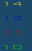
In Teammatch mode in the bottom right there is a column of numbers showing team scores.
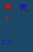
In Capture the Flag or Infiltration mode in the bottom right there are numbers showing captured flags by a team or teams points. When a flag is out of base you will notice also a crossed flag symbol.
Weapons
To select a weapon use the numerical keys 1-9,0 after start or when waiting for respawn. You can throw away your weapon and pickup another. You can carry two weapons (Primary & Secondary Weapon on your back).
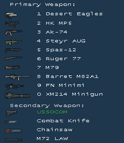
Selectable weapons:
-
Desert Eagles
Akimbo weapon! An automatic hand-gun that can break a man's arm. That's why it doesn't fire so frequently but the bullets can easily pierce thick armor.
-
HK MP5
The most popular submachine-gun in the world. Fast and furious. In short ranges it can defeat heavy weapons.
-
AK-74
Modified version of Automat-Kalasznikov from 1947. Weapon of terrorists and most of world's army forces. The best rifle in the past 50 years.
-
Steyr AUG
This weapon looks like a toy but it sure isn't. With great speed it spits out bullets killing everything in a fast attack.
-
Spas-12
This Shotgun makes a massacre with its 12-Gauge bullets. The best weapon for close-contact.
-
Ruger-77
A hunting rifle. Very fast and accurate. Good for hunting deers and people.
-
M79
The famous grenade-launcher from the Vietnam War. Viet-Cong quickly ran to the bushes when they heard its characteristic sound. The 40mm grenade can blast anyone into pieces even after a shot behind a hill.
-
Barret M82A1
This sniper weapon has incredible power. It was designed to pierce tank armor. The Army didn't even plan to use it against people. But who cares? Sniper mode available if you crouch or go prone.
-
M249 (FN Minimi)
The best machinegun with great firepower. Can be very helpful for backing-up your team.
-
XM214 Minigun
The famous "O'll Painless" from the movie Predator. This chaingun is mounted on army helicopters. It uses a tremendous amount of ammo and can kill the same amount of enemies.
Standard arsenal:
-
USSOCOM
Standard US special forces weapon. You get it always after respawn as a secondary weapon.
-
Combat Knife
Standard infantry combat knife. One direct hit with this little thing eliminates the enemy at once. Best for covert operations. Can be also used as a throw knife with the throw weapon button.
-
Chainsaw
A chainsaw used for cutting piles of wood. If somebody finds a different use for this please let everybody know.
-
M72 LAW
Anti-tank weapon, fires an explosive missile. Can be used only from the crouch position.
-
Fists
After throwing out your weapon you can play Rocky.
-
Fragmentation Grenades
Doesn't kill immediately but a good tactical throw can harm or kill a couple of enemy's at once. On start and when you pickup the green box grenade supplies.
Special weapons:
-
Rambo Bow
The famous Bow of John Rambo available in Rambomatch mode. Great for stealth operations. Silent, fast as lightning and lethal. You can change to exploding arrows with the change weapon key.
-
Flamethrower
It's used to set other players on fire. Available after picking up the Flame God bonus.
Weapons settings are moddable by editing the file weapons.ini.
Bonuses
On the map you can pickup several bonuses, that spawn from time to time:
-
Medikit
Regenerates your health to the maximum level.
-
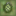
Grenades
Holds the amount of grenades you can carry (1-5).
-
 Cluster grenades
Cluster grenades
3 grenades that explode when hitting the ground. After that they throw out deadly explosive pieces.
-
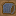
Bulletproof vest
It uses quickly but can save your life.
-
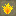
Flame God
Duration: 10 seconds.
You become the immortal master of fire! You get a flamethrower to burn enemies and also immortality, all in one. Flame your opponents without risk and laugh at them when they try to runaway!
-
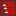
Berserker
Duration: 15 seconds.
In one word: massacre! Your weapons are four times stronger in Berserker Mode. Crush your enemies with a couple of shots!
-
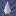
Predator
Duration: 25 seconds.
Become the lonely hunter! In Predator Mode you are invisible. Also, no one can hear your gun fire but if you fly and fire too much, you will become a ghost and therefore easier to strike! Also, remember that if you're hurt by the enemy he will see your blood. Try to steal your opponents flag in CTF mode now!
Commands
After pressing the "/" key you can enter one of the following commands:
Player commands:
| KILL |
Harakiri. |
| BRUTALKILL |
Very harakiri. |
| SMOKE |
Player lights or ends a cigar. |
| TABAC |
Player chews some tobacco. |
| TAKEOFF |
Player takes off his helmet. |
| VICTORY |
Player cheers. |
| PAUSE/UNPAUSE |
Pauses/unpauses the game. |
Server commands:
| ADDBOT bots name |
Adds a new bot to the game. |
| KICK players name or players number |
Removes a player/bot from the game. |
| BAN players name or players number |
Bans the player on the server so he can't join in again. |
| BANIP IP number |
Bans the IP number. |
| UNBAN IP number |
Unbans the IP number. |
| MAP map name |
Changes the map. |
| RESTART |
Resets the current match. |
| NEXTMAP |
Changes the map to the next one in the list. |
| ADM players name |
Adds the player to the Remote Admins list. |
| ADMIP IP number |
Adds the IP number to the Remote Admins list. |
| UNADM IP number |
Removes the IP number from the Remote Admins list. |
| KICKLAST |
Kicks the last player that entered the game. |
| RESPAWNTIME seconds |
Changes the respawn time. |
| MAXRESPAWNTIME seconds |
Changes the maximum respawn time in team games. |
| LIMIT number |
Changes the current kill/point/capture limit. |
| TIMELIMIT minutes |
Changes the current time limit. |
| PASSWORD text |
Changes the game server password (temporarily). |
| SETTEAMx player number |
Forces the player to join team x. |
| ADDBOTx bots name |
Adds a bot to team x. |
| FRIENDLYFIRE 0/1 |
Friendly fire on or off. |
| VOTE% 0-100 |
Changes the percentage of players needed to vote something. |
| BONUS 0-5 |
Frequency of bonuses 0-none, 5- lots. |
| MAXPLAYERS 1-32 |
Maximum players allowed on server. |
| LOADCON |
Reloads soldat.ini server settings. |
| LOADLIST xxx |
Loads the mapslist from xxx.txt. |
| LOADWEP xxx |
Reloads weapons.ini weapon settings or from file xxx.ini. |
| GAMEMODE 0-6 |
Changes the gamemode (0 DM, 1 PM, 2 TM, 3 CTF, 4 RM, 5 INF, 6 HTF). |
| REALISTIC 0/1 |
Switches realistic mode. |
| ADVANCE 0/1 |
Switches advance mode. |
| SURVIVAL 0/1 |
Switches survival mode. |
| KILL players name or players number |
Kills/punishes the player. |
| BANLAST |
Like /kicklast, bans for 1 hour the last player that joined. |
| UNBANLAST |
Unbans the last player that was banned. |
| LOBBY |
Reregisters the server in the lobby. |
| SAY text |
Sends a text message to all players on the server. |
Client-Server commands:
| ADMINLOG password |
Used to login as game server admin. |
| INFO |
Retrieves useful information from the server. |
| MUTE players name or players number |
Mutes the player so you don't see his chat. |
| UNMUTE players name or players number |
Unmutes the player. |
| RECORD name |
Records a demo stored in the Soldat\Demos folder. |
| STOP |
Stops the recording of a demo. |
Commands from a parameter:
These are parameters that can be used when running Soldat.exe:
-
Soldat.exe -dedicated
Starts a Soldat dedicated server.
-
Soldat.exe -start
Starts the game without entering the menu.
-
Soldat.exe -dedicated -start
Runs the dedicated server automatically.
-
Soldat.exe -join IPnumber (port password)
Runs the game and connects to IPnumber, port and password are optional.
Example:
Soldat.exe -join 62.93.201.70
Soldat.exe -join 127.0.0.1 23073 tikikaka
-
Soldat.exe -demo name (freecam speed notexts extract)
Runs the game and plays the demo specified by name. Optional paramaters are:
- freecam (0/1) - the user can freely change the camera (default 1)
- speed (0-...%)- how quick the playback will be specified in percents (default 100%)
- notexts (0/1) - no texts, menus or cursor will be displayed during playback (default 0)
- extract (0/1) - extracts the demo to BMP files (default 0). Later they can be used to make an AVI file in a program like "Bmp2Avi".
The sound can be extracted with a program like "Total Recorder". Please note that this can take time and is not recommended on slower systems. For better results specify lower speed (like 50%).
Example:
Soldat.exe -demo demo12
Soldat.exe -demo demo19 1 200 1 0
-
Soldat.exe -mod xxx
Starts the game with a Soldat mod located in Soldat\Mods\xxx
Chat
The default key for Chat function is T (for team chat Y), to send it press ENTER.
Taunts
You can use ready taunts from the file TAUNTS.TXT (placed in the Soldat folder or your profile folder) by using the ALT key + alpha-numeric keyboard keys.
Teamchat
If you want your chat text to appear in the console only for your teammates insert "^" before the text, like this: ^Whats up!
Dedicated Server
A dedicated server is used to run a faster Soldat server without a player.
You can do this in two ways:
- In the SOLDAT.INI file, section NETWORK, find Dedicated=0, change it to Dedicated=1.
-
Run the game with the parameter -dedicated (Soldat.exe -dedicated). You can use the shortcuts in the Start Menu.
If you want the server to start the game automatically do this:
- Run the game normally and enter the menu. Set all the game options (game mode, time limit, map list etc.)
- Quit the game and the settings will be saved
- Run Soldat with parameters -dedicated -start
Remote administration
Players from outside the server can control it. To give this option to a player add him to the Remote Admins list. The commands for this are described here COMMANDS.
Game Ports
Important! - If you have a firewall you should open the UDP game ports
default: 23073 for the server (can be changed in Soldat Setup) , client uses a default port: 23083 (can't be changed)
There is an option to join firewall servers without opening the ports, but only through the lobby server (through the server list - forwarding).
The Soldat server uses the following ports:
UDP: game port (default 23073)
TCP/IP: admin port = game port (default 23073)
TCP/IP: files port = game port + 10 (default 23083)
ANTI-CHEAT Protection
The Soldat network Anti-Cheat Protection is based on two modules.
Software company's developing multiplayer games spend millions of dollars, hundreds of hours, the work of thousands of people are wasted to invent the perfect anti-cheat systems. All those systems are as good as nothing because they forgot about one tiny little thing. The author of Soldat got the idea after 4 seconds of thinking. Now Sierra and other On-Line industry giants can't stand it that they didn't think of it first. The first Anti-Cheat Protection module in Soldat is simply:
-
A request: "Please don't cheat while playing Soldat".
If that somehow doesn't work then please read this:
- Because of the Anti-Cheat protection system used in Soldat you cannot use any hack tools like: memory finders, trainers, packet editors, hex editors and dissasemblers while Soldat is running. It is STRONGLY RECOMMENDED to CLOSE all programs running in the background while Soldat is on. The use of hack tools will degrade the game to a level it will no longer be playable. Also editing the executable or other related files and cracking the shareware protection will cause system instability and problems with network play. If this happens to you and you are sure you did not do anything illegal please contact the author.
Please remember that this is a small shareware game made by one man. If you try to break the game protection you make harm to yourself because I can stop making the game if I'm without money and with overload of work making new anti-hack and anti-cheat systems all the time. If you want to hack something please concentrate on big company's like EA Games. Hacking a big commercial title will prove that you are good, please leave Soldat alone.
Version History
See changelog.
License and distribution
COPYRIGHT INFORMATION
Soldat and all the file formats the program produces are Copyright (C) 2001-15 Michal Marcinkowski. All rights reserved.
=====================================================
LICENSE
Soldat is a Shareware application. It is fully playable. If you like the game please consider registering.
=====================================================
DISTRIBUTION
UNREGISTERED COPY VERSIONS OF SOLDAT.
Provided that you verify that you are distributing the Shareware Version you are hereby licensed to:
a. make as many copies of the Shareware version of this software and documentation as you wish
b. give exact copies of the original Shareware version to anyone
c. distribute the Shareware version of the software and documentation in its unmodified form via electronic means (e-mail, web page, diskette, CD including magazine Cover CDs)
There is no charge for any of the above.
REGISTERED VERSIONS OF SOLDAT.
You may not, for any purpose, distribute copies of registered versions of this software, documentation or related materials to any third-parties.
=====================================================
LEGAL STUFF
No portion of this software may be disassembled, reverse engineered, decompiled, modified or altered.
All graphics and sounds may be modified except maps and scenery files. Modified graphics and sounds can be distributed for free as game MODs.
This Software is supplied "as is" and no liability will be accepted by Michal Marcinkowski or any legal vendors of this software for any damage incurred by the use of this software.
Neither directly nor indirectly you cannot rent or sell by any means this software.
Credits
Soldat: Programming, Graphics, Sound, Music, Story ;),
Soldat Lobby Server, Soldat Dedicated Server (Linux and Windows),
Soldat Map Maker, Soldat Interface Maker, Soldat Admin, Soldat Setup,
Manual, Soldat Home Page:
by
Michal Marcinkowski (michal.marcinkowski<at>gmail.com)
Soldat is maintained by the Soldat Dev Team:
- Gregor. A. Cieslak (Shoozza)
- Tony Libell (zakath)
- Joe Gillotti (jrgp)
- Daniel Forssten (skoskav)
- Tomasz Kołosowski (falcon)
- Umut Karakas (ExHunter)
Former Soldat maintainers:
- Jacob Lindberg (Fryer)
- Reko Tiira (reko_t)
- Michael Himing (tmtgr)
- Nick Cooper (EnEsCe)
- Chris GreenBank (ChrisGBK)
- Michal Marcinkowski (MM)
Soldat Lobby Server is maintained by:
Game music:
- Bloody Soil, Gore, Necromancide by BSG (Guitar Pro tabulatures)
Additional maps:
- Airpirates-XT by Evil Ville and remake by X-Tender
- Bigfalls, Daybreak, inf_Moonshine, Blox, ctf_Snakebite, ctf_Ash, Island2k5 by chakapoko maker
- Tropiccave by Avarax
- Factory by viggoloniggolo
- ctf_Chernobyl, ctf_Equinox by Doggfather
- ctf_Crashed by Deo
- ctf_Dropdown, ctf_Dropdown2, ctf_Division by Boxo (and Vigg)
- inf_Normandy by Enjoyincubus
- htf_Arch by Sticky
- ctf_Maya, htf_Boxed, htf_Futura, htf_Nuclear, DesertWind, htf_Rubik, ctf_Maya2, ctf_Lanubya, inf_Messner by grand_diablo
- htf_Desert by DeMonIc
- ctf_Nuubia by Troskal
- htf_Dusk by Michal
- htf_Muygen by The Geologist (waypoints by Keron Cyst)
- ctf_Conquest, ctf_Cobra by Demonic
- htf_Zajacz by Keron Cyst
Most waypoints and map fixes by Keron Cyst
Remakes:
- Ctf_Death by NuZZ
- HH by Stalky
- Arena2, ctf_Death2 by grand_diablo
Improved original maps:
- inf_Outpost, MrSnowman, Bridge, Bunker, ctf_Viet by Enjoyincubus
Interfaces:
- "Cabbage" interface by NightCabbage
- "Micro1" interface by grand_diablo
- "Lacey v2" interface by Urhos
- "Soldat Style" interface by Michal
EVO Soldat gostek-gfx by Michal
Translations:
Thanks to all the translators, I couldn't keep track who made what part of the translation, a big thanks for all who helped out the local communities and who I forgot to mention.
- Belarussian translation by ?
- Brazilian Portuguese translation by Felipe Augusto (t3chn0k), Prodigyx, deguix and Hex
- Catalan translation by ?
- Chinese(Traditional) translation by ?
- Croatian translation by Woland and filip2322
- Czech translation by cApOnE
- Dutch translation by DutchFlame
- Estonian translation by Xdada
- Finnish translation by Eskhata, Jerkington XIII and Reko Tiira (reko_t)
- French translation by Kaze, Colonel ONeill and Bistoufly
- German translation by Gregor A. Cieslak (Shoozza)
- Greek translation by Leo
- Hebrew translation by Red Ninja and nosejj
- Hungarian translation by PsychoHUN
- Italian translation by PANTERA
- Japanese translation by sanada
- Korean translation by kzya
- Lithuanian translation by ?
- Norwegian translation by evhO and Snu5_Mum12
- Polish translation by machina
- Russian translation by SyavX and n0b-
- Slovak translation by cApOnE and M[a]nny
- Spanish translation by Fujifabric
- Swedish translation by Jacob Lindberg (Fryer) and Tony Libell (zakath)
- Thai translation by ?
- Turkish translation by XmRipper and verbeia
- Ukrainian translation by SyavX
Tools and components used in development:
Special thanks to:
- The whole Soldat Community! Everybody that mailed me and talked about Soldat on message boards, giving me good advice and motivating me.
- Warsztat (http://warsztat.pac.pl) - for their help in testing the former betas.
- Thomasa Jakobsen from IO Interactive for his wonderful article (http://www.teknikus.dk/tj/gdc2001.htm).
- Number27 for his tutorials (I don't have the address).
- FliesLikeABrick for hosting and administering Soldat Forums (http://forums.soldat.pl) and all the moderators.
- DNA.Styx for administrating the old Soldat Forums.
- The Soldat Community members, especially: Ardaen for helping with the Anti-Cheat and network code, b00stA for the URL shortcut and scripts, Hercules Poirot for the polygon bugs project and people who helped him.
- The Soldat Forums beta testing team.
- Dolny for hosting the first official web site, promotion and ideas.
- TRSSam for providing the first lobby server.
- Special, special thanks for all those that tested Soldat and made it a better game (yes it's you!).
- In a short version I thank: the electric company, my computers, my keyboard, start menu, John Pascal (or whatever his name is), John 'god' Carmack, Bill G., Sylvester S., Arnold S. ...
- To those who should be here but didn't remind me that they should be here ;)
E-mail: michal.marcinkowski<at>gmail.com
WWW: http://www.soldat.pl
Soldat Forums: http://forums.soldat.pl
[index]